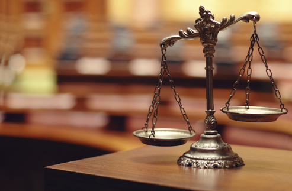

-Building my 3D model-
I Believe that my 3D object Is fit for purpose as it follows all the specifications of the Dazzle me brief that we received for this assignment.I tested every time i added to my model to make sure that it follows and meets all the requirements that we where given to complete this assignment.
This shows the platform i used to build my model

-What design ellemnts did i focus on?-
When Building my model in the soft where I chose to use Magica Voxel I used an array of diffent tools with in the app to reach the model presented to the right.
These included the Add brick tool that aloud me to build the 3D model from the ground up. I also used the arise brick tool to get rid of any mistakes or imperfections I notes during the building prosses. I also used the colouring tool that I used to colour the model in its correct colours. Also within the app I used many other technique to help me to create the final model such as changing the grid layout and canvas sizes to better suit my creative style. Apart from that I used binded some specific keys on my key board to assist with fast paced creation.

-Any Legal/Ethical/Moral issues that I need to think about/research? -
When constructing my model I had to consider these points as I new my website would be online for many to see. When making my website I made sure to not use copy righted images. I did this buy using my own images that I had created. I also consulted rjm web design and smashing web design articles to read about web design ethics.
